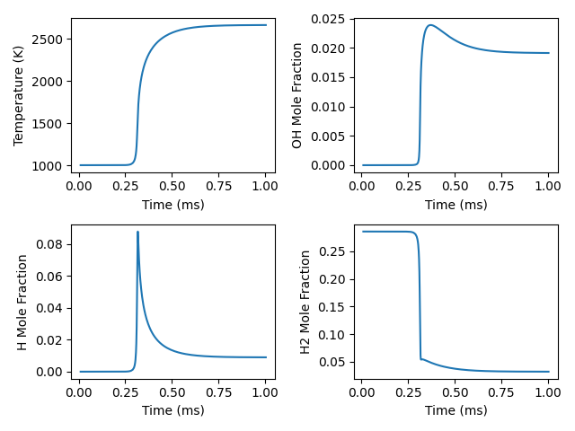

Note
Go to the end to download the full example code.
Constant-pressure, adiabatic kinetics simulation#
Requires: cantera >= 3.2.0, matplotlib >= 2.0

Initializing reactor network.
Reactor 0: 12 variables.
0 sensitivity params.
Number of equations: 12
Maximum time step: 0
t [s] T [K] P [Pa] u [J/kg]
1.000e-05 1001.000 101325.000 620761.940774
2.000e-05 1001.000 101325.000 620761.940024
3.000e-05 1001.000 101325.000 620761.937443
4.000e-05 1001.000 101325.000 620761.932033
5.000e-05 1001.000 101325.000 620761.922252
6.000e-05 1001.000 101325.000 620761.905713
7.000e-05 1001.000 101325.000 620761.878726
8.000e-05 1001.000 101325.000 620761.835581
9.000e-05 1001.001 101325.000 620761.767439
1.000e-04 1001.001 101325.000 620761.660610
1.100e-04 1001.001 101325.000 620761.493868
1.200e-04 1001.002 101325.000 620761.234254
1.300e-04 1001.003 101325.000 620760.830472
1.400e-04 1001.005 101325.000 620760.202400
1.500e-04 1001.008 101325.000 620759.224211
1.600e-04 1001.012 101325.000 620757.696676
1.700e-04 1001.019 101325.000 620755.300456
1.800e-04 1001.030 101325.000 620751.514427
1.900e-04 1001.048 101325.000 620745.466071
2.000e-04 1001.076 101325.000 620735.641820
2.100e-04 1001.124 101325.000 620719.290355
2.200e-04 1001.204 101325.000 620691.110443
2.300e-04 1001.349 101325.000 620640.174258
2.400e-04 1001.623 101325.000 620542.301923
2.500e-04 1002.182 101325.000 620340.607806
2.600e-04 1003.397 101325.000 619897.679385
2.700e-04 1006.134 101325.000 618893.720137
2.800e-04 1012.324 101325.000 616618.265942
2.900e-04 1026.776 101325.000 611310.136421
Advance limit triggered for component 1 (dt = 6.515e-06): y_start = 1026.78, y_end = 1046.78, delta = 20, limit = 20
2.965e-04 1046.776 101325.000 603978.054304
Advance limit triggered for component 1 (dt = 3.798e-06): y_start = 1046.78, y_end = 1066.78, delta = 20, limit = 20
3.003e-04 1066.776 101325.000 596662.364799
Advance limit triggered for component 1 (dt = 2.583e-06): y_start = 1066.78, y_end = 1086.78, delta = 20, limit = 20
3.029e-04 1086.776 101325.000 589362.909407
Advance limit triggered for component 1 (dt = 1.903e-06): y_start = 1086.78, y_end = 1106.78, delta = 20, limit = 20
3.048e-04 1106.776 101325.000 582079.500809
Advance limit triggered for component 1 (dt = 1.475e-06): y_start = 1106.78, y_end = 1126.78, delta = 20, limit = 20
3.063e-04 1126.776 101325.000 574811.988170
Advance limit triggered for component 1 (dt = 1.184e-06): y_start = 1126.78, y_end = 1146.78, delta = 20, limit = 20
3.075e-04 1146.776 101325.000 567560.278394
Advance limit triggered for component 1 (dt = 9.768e-07): y_start = 1146.78, y_end = 1166.78, delta = 20, limit = 20
3.084e-04 1166.776 101325.000 560324.346194
Advance limit triggered for component 1 (dt = 8.233e-07): y_start = 1166.78, y_end = 1186.78, delta = 20, limit = 20
3.093e-04 1186.776 101325.000 553104.239841
Advance limit triggered for component 1 (dt = 7.066e-07): y_start = 1186.78, y_end = 1206.78, delta = 20, limit = 20
3.100e-04 1206.776 101325.000 545900.085173
Advance limit triggered for component 1 (dt = 6.159e-07): y_start = 1206.78, y_end = 1226.78, delta = 20, limit = 20
3.106e-04 1226.776 101325.000 538712.089213
Advance limit triggered for component 1 (dt = 5.443e-07): y_start = 1226.78, y_end = 1246.78, delta = 20, limit = 20
3.111e-04 1246.776 101325.000 531540.544227
Advance limit triggered for component 1 (dt = 4.871e-07): y_start = 1246.78, y_end = 1266.78, delta = 20, limit = 20
3.116e-04 1266.776 101325.000 524385.833020
Advance limit triggered for component 1 (dt = 4.411e-07): y_start = 1266.78, y_end = 1286.78, delta = 20, limit = 20
3.121e-04 1286.776 101325.000 517248.435831
Advance limit triggered for component 1 (dt = 4.04e-07): y_start = 1286.78, y_end = 1306.78, delta = 20, limit = 20
3.125e-04 1306.776 101325.000 510128.939265
Advance limit triggered for component 1 (dt = 3.739e-07): y_start = 1306.78, y_end = 1326.78, delta = 20, limit = 20
3.128e-04 1326.776 101325.000 503028.047510
Advance limit triggered for component 1 (dt = 3.497e-07): y_start = 1326.78, y_end = 1346.78, delta = 20, limit = 20
3.132e-04 1346.776 101325.000 495946.595945
Advance limit triggered for component 1 (dt = 3.305e-07): y_start = 1346.78, y_end = 1366.78, delta = 20, limit = 20
3.135e-04 1366.776 101325.000 488885.567137
Advance limit triggered for component 1 (dt = 3.156e-07): y_start = 1366.78, y_end = 1386.78, delta = 20, limit = 20
3.138e-04 1386.776 101325.000 481846.108851
Advance limit triggered for component 1 (dt = 3.045e-07): y_start = 1386.78, y_end = 1406.78, delta = 20, limit = 20
3.141e-04 1406.776 101325.000 474829.553176
Advance limit triggered for component 1 (dt = 2.969e-07): y_start = 1406.78, y_end = 1426.78, delta = 20, limit = 20
3.144e-04 1426.776 101325.000 467837.434987
Advance limit triggered for component 1 (dt = 2.926e-07): y_start = 1426.78, y_end = 1446.78, delta = 20, limit = 20
3.147e-04 1446.776 101325.000 460871.506441
Advance limit triggered for component 1 (dt = 2.916e-07): y_start = 1446.78, y_end = 1466.78, delta = 20, limit = 20
3.150e-04 1466.776 101325.000 453933.741845
Advance limit triggered for component 1 (dt = 2.939e-07): y_start = 1466.78, y_end = 1486.78, delta = 20, limit = 20
3.153e-04 1486.776 101325.000 447026.323811
Advance limit triggered for component 1 (dt = 2.995e-07): y_start = 1486.78, y_end = 1506.78, delta = 20, limit = 20
3.156e-04 1506.776 101325.000 440151.597122
Advance limit triggered for component 1 (dt = 3.085e-07): y_start = 1506.78, y_end = 1526.78, delta = 20, limit = 20
3.159e-04 1526.776 101325.000 433311.972208
Advance limit triggered for component 1 (dt = 3.213e-07): y_start = 1526.78, y_end = 1546.78, delta = 20, limit = 20
3.162e-04 1546.776 101325.000 426509.758673
Advance limit triggered for component 1 (dt = 3.378e-07): y_start = 1546.78, y_end = 1566.78, delta = 20, limit = 20
3.166e-04 1566.776 101325.000 419746.917419
Advance limit triggered for component 1 (dt = 3.58e-07): y_start = 1566.78, y_end = 1586.78, delta = 20, limit = 20
3.169e-04 1586.776 101325.000 413024.746733
Advance limit triggered for component 1 (dt = 3.818e-07): y_start = 1586.78, y_end = 1606.78, delta = 20, limit = 20
3.173e-04 1606.776 101325.000 406343.567420
Advance limit triggered for component 1 (dt = 4.087e-07): y_start = 1606.78, y_end = 1626.78, delta = 20, limit = 20
3.177e-04 1626.776 101325.000 399702.527136
Advance limit triggered for component 1 (dt = 4.382e-07): y_start = 1626.78, y_end = 1646.78, delta = 20, limit = 20
3.182e-04 1646.776 101325.000 393099.652720
Advance limit triggered for component 1 (dt = 4.698e-07): y_start = 1646.78, y_end = 1666.78, delta = 20, limit = 20
3.186e-04 1666.776 101325.000 386532.193479
Advance limit triggered for component 1 (dt = 5.032e-07): y_start = 1666.78, y_end = 1686.78, delta = 20, limit = 20
3.191e-04 1686.776 101325.000 379997.146385
Advance limit triggered for component 1 (dt = 5.381e-07): y_start = 1686.78, y_end = 1706.78, delta = 20, limit = 20
3.197e-04 1706.776 101325.000 373491.756601
Advance limit triggered for component 1 (dt = 5.747e-07): y_start = 1706.78, y_end = 1726.78, delta = 20, limit = 20
3.202e-04 1726.776 101325.000 367013.827612
Advance limit triggered for component 1 (dt = 6.132e-07): y_start = 1726.78, y_end = 1746.78, delta = 20, limit = 20
3.209e-04 1746.776 101325.000 360561.803487
Advance limit triggered for component 1 (dt = 6.539e-07): y_start = 1746.78, y_end = 1766.78, delta = 20, limit = 20
3.215e-04 1766.776 101325.000 354134.688531
Advance limit triggered for component 1 (dt = 6.97e-07): y_start = 1766.78, y_end = 1786.78, delta = 20, limit = 20
3.222e-04 1786.776 101325.000 347731.897764
Advance limit triggered for component 1 (dt = 7.429e-07): y_start = 1786.78, y_end = 1806.78, delta = 20, limit = 20
3.230e-04 1806.776 101325.000 341353.108159
Advance limit triggered for component 1 (dt = 7.918e-07): y_start = 1806.78, y_end = 1826.78, delta = 20, limit = 20
3.237e-04 1826.776 101325.000 334998.144254
Advance limit triggered for component 1 (dt = 8.441e-07): y_start = 1826.78, y_end = 1846.78, delta = 20, limit = 20
3.246e-04 1846.776 101325.000 328666.904428
Advance limit triggered for component 1 (dt = 8.999e-07): y_start = 1846.78, y_end = 1866.78, delta = 20, limit = 20
3.255e-04 1866.776 101325.000 322359.319543
Advance limit triggered for component 1 (dt = 9.597e-07): y_start = 1866.78, y_end = 1886.78, delta = 20, limit = 20
3.264e-04 1886.776 101325.000 316075.332823
Advance limit triggered for component 1 (dt = 1.024e-06): y_start = 1886.78, y_end = 1906.78, delta = 20, limit = 20
3.275e-04 1906.776 101325.000 309814.891118
Advance limit triggered for component 1 (dt = 1.092e-06): y_start = 1906.78, y_end = 1926.78, delta = 20, limit = 20
3.286e-04 1926.776 101325.000 303577.941715
Advance limit triggered for component 1 (dt = 1.166e-06): y_start = 1926.78, y_end = 1946.78, delta = 20, limit = 20
3.297e-04 1946.776 101325.000 297364.431222
Advance limit triggered for component 1 (dt = 1.244e-06): y_start = 1946.78, y_end = 1966.78, delta = 20, limit = 20
3.310e-04 1966.776 101325.000 291174.305218
Advance limit triggered for component 1 (dt = 1.329e-06): y_start = 1966.78, y_end = 1986.78, delta = 20, limit = 20
3.323e-04 1986.776 101325.000 285007.508155
Advance limit triggered for component 1 (dt = 1.42e-06): y_start = 1986.78, y_end = 2006.78, delta = 20, limit = 20
3.337e-04 2006.776 101325.000 278863.983255
Advance limit triggered for component 1 (dt = 1.518e-06): y_start = 2006.78, y_end = 2026.78, delta = 20, limit = 20
3.352e-04 2026.776 101325.000 272743.672399
Advance limit triggered for component 1 (dt = 1.624e-06): y_start = 2026.78, y_end = 2046.78, delta = 20, limit = 20
3.369e-04 2046.776 101325.000 266646.516171
Advance limit triggered for component 1 (dt = 1.738e-06): y_start = 2046.78, y_end = 2066.78, delta = 20, limit = 20
3.386e-04 2066.776 101325.000 260572.453738
Advance limit triggered for component 1 (dt = 1.861e-06): y_start = 2066.78, y_end = 2086.78, delta = 20, limit = 20
3.405e-04 2086.776 101325.000 254521.422844
Advance limit triggered for component 1 (dt = 1.994e-06): y_start = 2086.78, y_end = 2106.78, delta = 20, limit = 20
3.425e-04 2106.776 101325.000 248493.359672
Advance limit triggered for component 1 (dt = 2.139e-06): y_start = 2106.78, y_end = 2126.78, delta = 20, limit = 20
3.446e-04 2126.776 101325.000 242488.198720
Advance limit triggered for component 1 (dt = 2.295e-06): y_start = 2126.78, y_end = 2146.78, delta = 20, limit = 20
3.469e-04 2146.776 101325.000 236505.872942
Advance limit triggered for component 1 (dt = 2.466e-06): y_start = 2146.78, y_end = 2166.78, delta = 20, limit = 20
3.494e-04 2166.776 101325.000 230546.313686
Advance limit triggered for component 1 (dt = 2.652e-06): y_start = 2166.78, y_end = 2186.78, delta = 20, limit = 20
3.520e-04 2186.776 101325.000 224609.450353
Advance limit triggered for component 1 (dt = 2.855e-06): y_start = 2186.78, y_end = 2206.78, delta = 20, limit = 20
3.549e-04 2206.776 101325.000 218695.210332
Advance limit triggered for component 1 (dt = 3.077e-06): y_start = 2206.78, y_end = 2226.78, delta = 20, limit = 20
3.579e-04 2226.776 101325.000 212803.519181
Advance limit triggered for component 1 (dt = 3.321e-06): y_start = 2226.78, y_end = 2246.78, delta = 20, limit = 20
3.613e-04 2246.776 101325.000 206934.300536
Advance limit triggered for component 1 (dt = 3.589e-06): y_start = 2246.78, y_end = 2266.78, delta = 20, limit = 20
3.648e-04 2266.776 101325.000 201087.475703
Advance limit triggered for component 1 (dt = 3.885e-06): y_start = 2266.78, y_end = 2286.78, delta = 20, limit = 20
3.687e-04 2286.776 101325.000 195262.963824
Advance limit triggered for component 1 (dt = 4.214e-06): y_start = 2286.78, y_end = 2306.78, delta = 20, limit = 20
3.729e-04 2306.776 101325.000 189460.681788
Advance limit triggered for component 1 (dt = 4.58e-06): y_start = 2306.78, y_end = 2326.78, delta = 20, limit = 20
3.775e-04 2326.776 101325.000 183680.544120
Advance limit triggered for component 1 (dt = 4.989e-06): y_start = 2326.78, y_end = 2346.78, delta = 20, limit = 20
3.825e-04 2346.776 101325.000 177922.462775
Advance limit triggered for component 1 (dt = 5.448e-06): y_start = 2346.78, y_end = 2366.78, delta = 20, limit = 20
3.880e-04 2366.776 101325.000 172186.347225
Advance limit triggered for component 1 (dt = 5.969e-06): y_start = 2366.78, y_end = 2386.78, delta = 20, limit = 20
3.939e-04 2386.776 101325.000 166472.104317
Advance limit triggered for component 1 (dt = 6.562e-06): y_start = 2386.78, y_end = 2406.78, delta = 20, limit = 20
4.005e-04 2406.776 101325.000 160779.638195
Advance limit triggered for component 1 (dt = 7.245e-06): y_start = 2406.78, y_end = 2426.78, delta = 20, limit = 20
4.077e-04 2426.776 101325.000 155108.850271
Advance limit triggered for component 1 (dt = 8.038e-06): y_start = 2426.78, y_end = 2446.78, delta = 20, limit = 20
4.158e-04 2446.776 101325.000 149459.639167
Advance limit triggered for component 1 (dt = 8.974e-06): y_start = 2446.78, y_end = 2466.78, delta = 20, limit = 20
4.248e-04 2466.776 101325.000 143831.900990
4.348e-04 2486.776 101325.000 138225.528966
4.448e-04 2504.372 101325.000 133310.620272
4.548e-04 2520.073 101325.000 128938.720316
4.648e-04 2534.132 101325.000 125035.219294
4.748e-04 2546.754 101325.000 121539.434609
4.848e-04 2558.111 101325.000 118401.213764
4.948e-04 2568.347 101325.000 115578.515709
5.048e-04 2577.585 101325.000 113035.661072
5.148e-04 2585.932 101325.000 110742.042338
5.248e-04 2593.479 101325.000 108671.158173
5.348e-04 2600.308 101325.000 106799.879691
5.448e-04 2606.490 101325.000 105107.884495
5.548e-04 2612.089 101325.000 103577.215425
5.648e-04 2617.161 101325.000 102191.928510
5.748e-04 2621.758 101325.000 100937.812218
5.848e-04 2625.923 101325.000 99802.157785
5.948e-04 2629.699 101325.000 98773.569970
6.048e-04 2633.121 101325.000 97841.809044
6.148e-04 2636.224 101325.000 96997.657339
6.248e-04 2639.036 101325.000 96232.805366
6.348e-04 2641.586 101325.000 95539.753696
6.448e-04 2643.898 101325.000 94911.727551
6.548e-04 2645.994 101325.000 94342.602852
6.648e-04 2647.894 101325.000 93826.839807
6.748e-04 2649.616 101325.000 93359.425343
6.848e-04 2651.178 101325.000 92935.820880
6.948e-04 2652.593 101325.000 92551.916355
7.048e-04 2653.877 101325.000 92203.989175
7.148e-04 2655.040 101325.000 91888.666917
7.248e-04 2656.094 101325.000 91602.894015
7.348e-04 2657.050 101325.000 91343.901703
7.448e-04 2657.917 101325.000 91109.180902
7.548e-04 2658.702 101325.000 90896.457734
7.648e-04 2659.414 101325.000 90703.671394
7.748e-04 2660.059 101325.000 90528.954126
7.848e-04 2660.644 101325.000 90370.613115
7.948e-04 2661.174 101325.000 90227.114075
8.048e-04 2661.654 101325.000 90097.066404
8.148e-04 2662.089 101325.000 89979.209720
8.248e-04 2662.484 101325.000 89872.401675
8.348e-04 2662.842 101325.000 89775.606896
8.448e-04 2663.166 101325.000 89687.886986
8.548e-04 2663.459 101325.000 89608.391446
8.648e-04 2663.726 101325.000 89536.349433
8.748e-04 2663.967 101325.000 89471.062301
8.848e-04 2664.186 101325.000 89411.896874
8.948e-04 2664.384 101325.000 89358.279299
9.048e-04 2664.563 101325.000 89309.689488
9.148e-04 2664.726 101325.000 89265.656087
9.248e-04 2664.874 101325.000 89225.751918
9.348e-04 2665.007 101325.000 89189.589836
9.448e-04 2665.128 101325.000 89156.818991
9.548e-04 2665.238 101325.000 89127.121425
9.648e-04 2665.338 101325.000 89100.208956
9.748e-04 2665.428 101325.000 89075.820402
9.848e-04 2665.510 101325.000 89053.719087
9.948e-04 2665.584 101325.000 89033.690541
1.005e-03 2665.651 101325.000 89015.540396
import sys
import cantera as ct
gas = ct.Solution('h2o2.yaml')
gas.TPX = 1001.0, ct.one_atm, 'H2:2,O2:1,N2:4'
r = ct.IdealGasConstPressureReactor(gas, clone=False)
sim = ct.ReactorNet([r])
sim.verbose = True
# limit advance when temperature difference is exceeded
delta_T_max = 20.
r.set_advance_limit('temperature', delta_T_max)
dt_max = 1.e-5
t_end = 100 * dt_max
states = ct.SolutionArray(gas, extra=['t'])
print('{:10s} {:10s} {:10s} {:14s}'.format(
't [s]', 'T [K]', 'P [Pa]', 'u [J/kg]'))
while sim.time < t_end:
sim.advance(sim.time + dt_max)
states.append(r.phase.state, t=sim.time*1e3)
print('{:10.3e} {:10.3f} {:10.3f} {:14.6f}'.format(
sim.time, r.T, r.phase.P, r.phase.u))
# Plot the results if matplotlib is installed.
# See http://matplotlib.org/ to get it.
if '--plot' in sys.argv[1:]:
import matplotlib.pyplot as plt
plt.clf()
plt.subplot(2, 2, 1)
plt.plot(states.t, states.T)
plt.xlabel('Time (ms)')
plt.ylabel('Temperature (K)')
plt.subplot(2, 2, 2)
plt.plot(states.t, states.X[:, gas.species_index('OH')])
plt.xlabel('Time (ms)')
plt.ylabel('OH Mole Fraction')
plt.subplot(2, 2, 3)
plt.plot(states.t, states.X[:, gas.species_index('H')])
plt.xlabel('Time (ms)')
plt.ylabel('H Mole Fraction')
plt.subplot(2, 2, 4)
plt.plot(states.t, states.X[:, gas.species_index('H2')])
plt.xlabel('Time (ms)')
plt.ylabel('H2 Mole Fraction')
plt.tight_layout()
plt.show()
else:
print("To view a plot of these results, run this script with the option --plot")
Total running time of the script: (0 minutes 0.366 seconds)